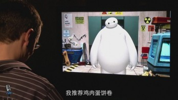

美国特派记者专赴《超能陆战队》诞生之地——迪士尼动画工作室，与影片中最亮的明星“大白”面对面交流。
时光网特稿 奥斯卡最佳动画片《超能陆战队》今天（2月28日）终于正式公映，与内地观众见面了。这部迪士尼动画与漫威首次联姻的作品在中国早就已经名声大噪，如今又“黄袍加身”，捧得了沉甸甸的小金人，它在中国市场上表现如何更加引人期待。
就在影片公映前不久，时光网美国特派记者专赴《超能陆战队》诞生之地——迪士尼动画工作室，在那里与影片的两位导演唐·霍尔与克里斯·威廉姆斯对谈，听他们讲述影片背后的种种趣事。而更让人眼前一亮的，是影片中最亮的明星“大白”也抽空接受了记者的采访。如今大白虽然身价倍增，但还是不忘恪守本分，与记者的对话也是“三句话不离本行”，给出了好多营养与健康方面的建议。当然，大白也不忘给我们的记者扫描一番，报告他的身体状况。能与《超能陆战队》中最大牌的明星面对面，还真的是机会难得呢。
《超能陆战队》是迪士尼动画工作室继《冰雪奇缘》之后的又一力作，耗时三年半才最终完成。影片在北美上映后收获了口碑和票房的双重肯定，截止到目前已经在全球范围内取得了5.46亿美元的票房成绩。不知中国票仓最终会再为这个数字带来多大的增幅。去年的《冰雪奇缘》在春节档遭遇了《大闹天宫》《爸爸去哪儿》这样“强劲”的对手，最终票房停留在3亿以内（约2.98亿），如今《超能陆战队》会否超过这个成绩，眼下也是个悬念。但不可否认的是，大白成功的形象塑造已经让影片先声夺人，而他究竟是如何诞生的，他的大本营和大Boss们又是怎样的，就让我们跟随时光网记者一起去一探究竟吧。

▌独家对话大白文字实录
MTIME：你好 Baymax。 今天过得怎么样？
大白：你好，我叫Baymax，我是你的私人健康护理伴侣，随时为你服务。
MTIME：作为一个私人健康护理，你觉得早餐吃什么比较健康？
大白：一份健康的早餐，应该包含蛋白质，以及蔬菜，我推鸡肉蛋饼卷。
MTIME：这个建议不错，我喜欢。
大白：不过，鸡蛋里面包鸡肉有点讽刺。
MTIME：这话没错，这话没错，作为一个私人健康护理助手，抱歉应该叫伴侣。
大白：我是伴侣。
MTIME：伴侣，没错。
大白：我是你的朋友。
MTIME：了解，在你看来，超能陆战队中最健康的是谁？
大白：超能陆战队中最健康的成员，是阿宏，我竭尽全力照顾他的身体。你健康吗，Brent？
MTIME：蛮健康的吧，我肩膀有点痛，但……
大白：我来给你做个扫描。
MTIME：OK。
大白：扫描完毕，你的肩部，有轻微骨折。
MTIME：那我得去检查一下。你经常到处飞行，能从不同的角度欣赏旧京山。你喜欢飞行吗？
大白：飞行有助于我的健康护理工作，帮助阿宏提升胺多酚分泌，增加大脑神经递质。
MTIME：我要怎么说服我爸爸吃牛油果有好处？
大白：把他交给我。我会告诉你爸爸关于牛油果的一切好处。
大白：把他交给我。我会告诉你爸爸关于牛油果的一切好处。
MTIME：我会的。
大白：我不建议把牛油果强制塞入他人口中。
MTIME：没错，先得把它切碎。
大白：吃不吃牛油果是一个人的自由。
MTIME：确实如此，你最喜欢哪种运动？是在海滩散步还是剧烈运动？
大白：哪种运动都不喜欢，因为我是个机器人，但是我很喜欢提出建议，跳跃运动，或者是飞行。
MTIME：你真的很喜欢飞行，你在这方面应该很有天赋。
大白：飞行有助于我的健康护理工作。
MTIME：你最喜欢旧京山的哪个地区？
大白：有阿宏的地方我都喜欢。
MTIME：非常好，和你聊天非常开心。
大白：我很喜欢和你聊天，Brent。
MTIME：我也很喜欢。
大白：你必须说“我对你的照顾表示满意”，我才能关机，你满意吗？
MTIME：我对你的照顾非常满意，Baymax，谢谢！
大白：谢谢，Brent，再见。
MTIME：再见。
(来源于：时光网)